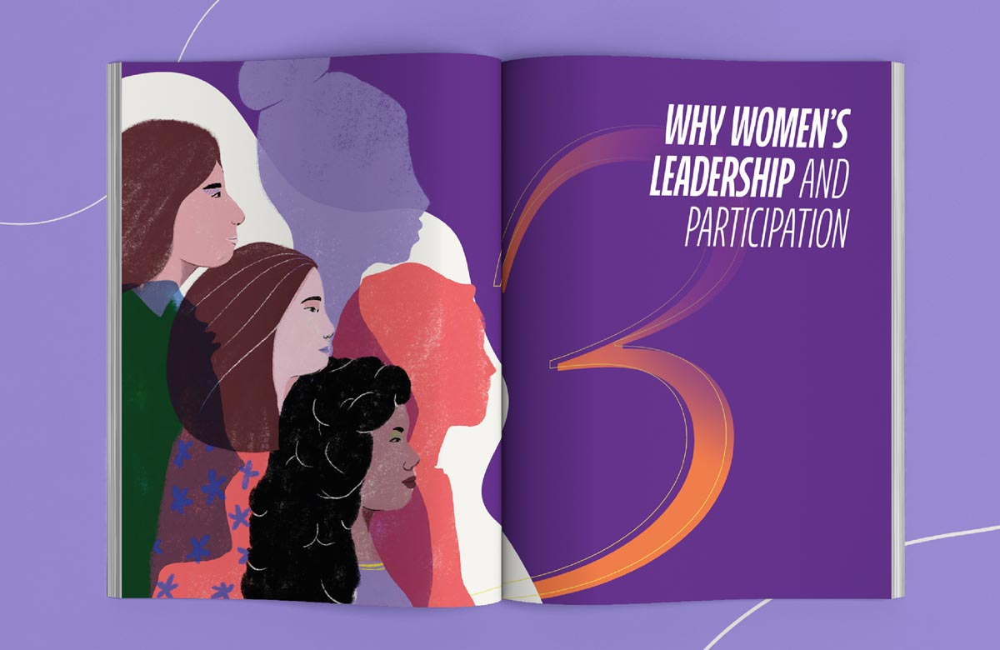
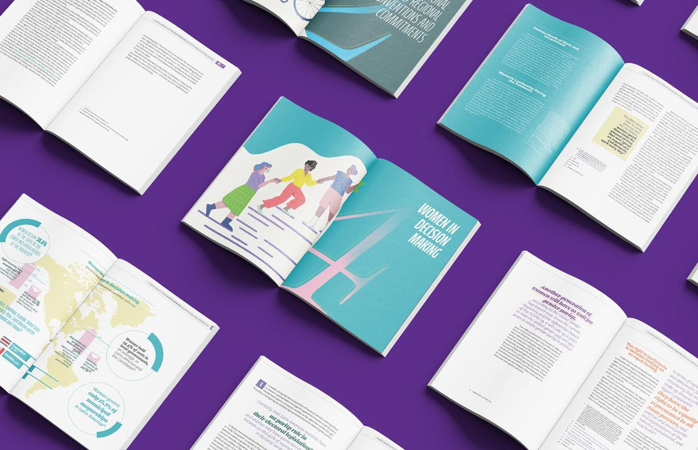
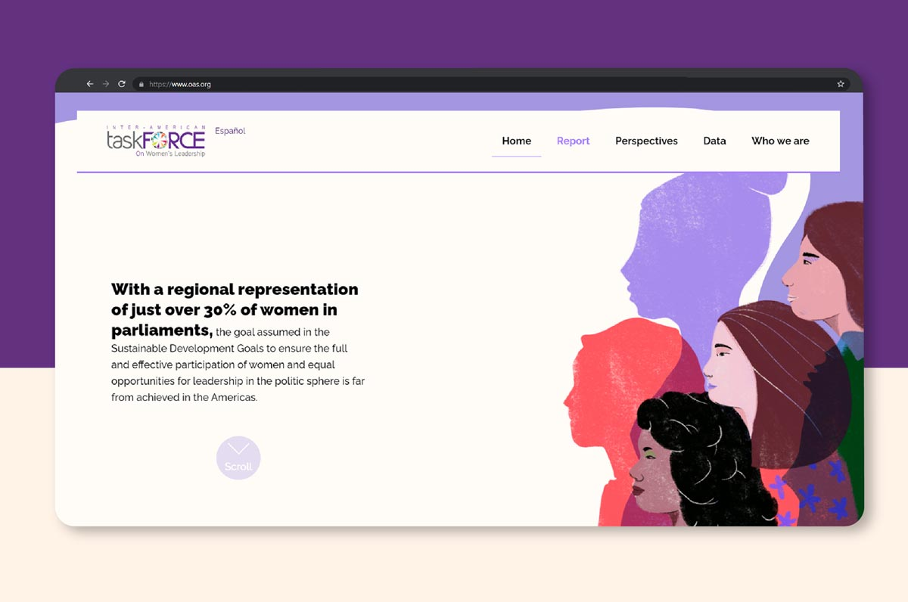
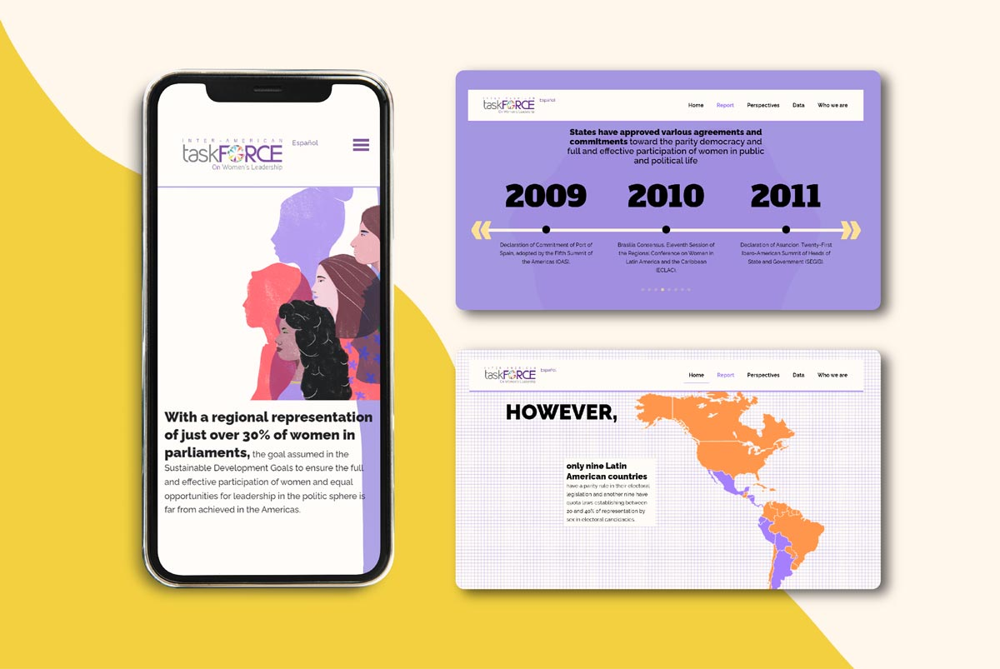
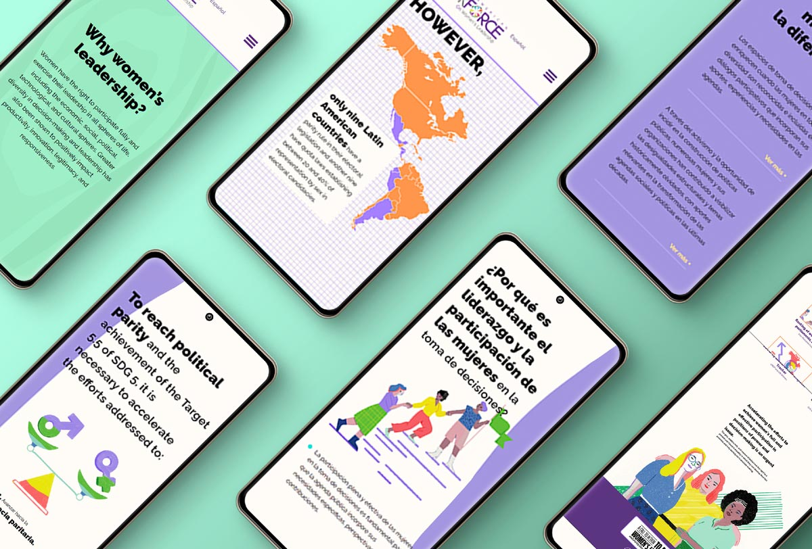
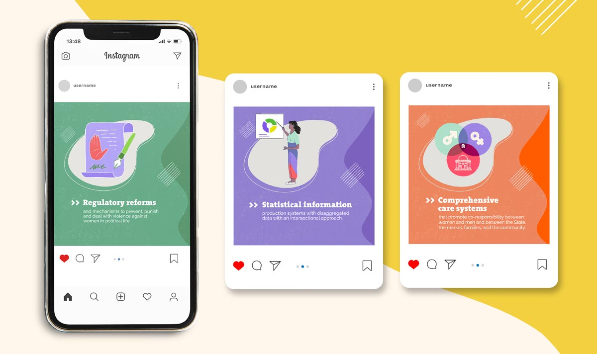
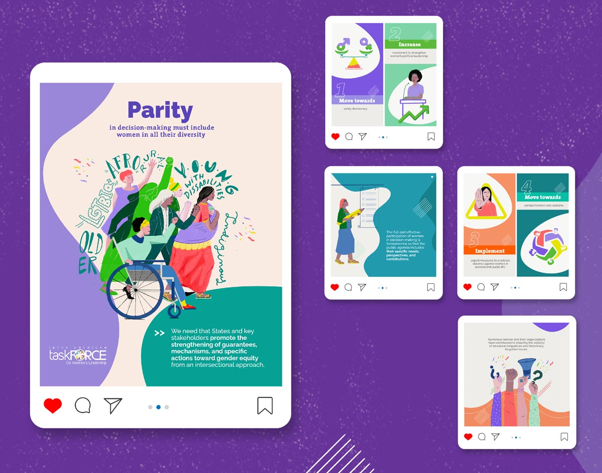
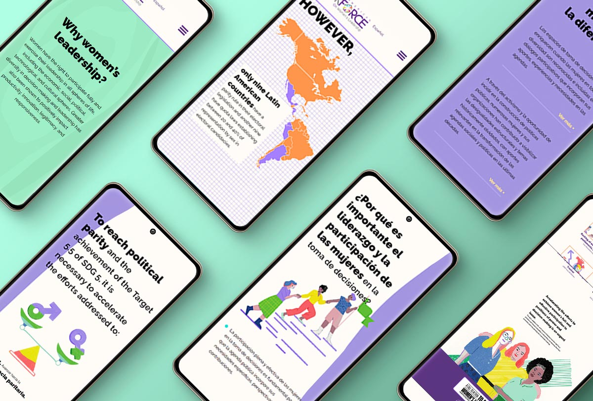
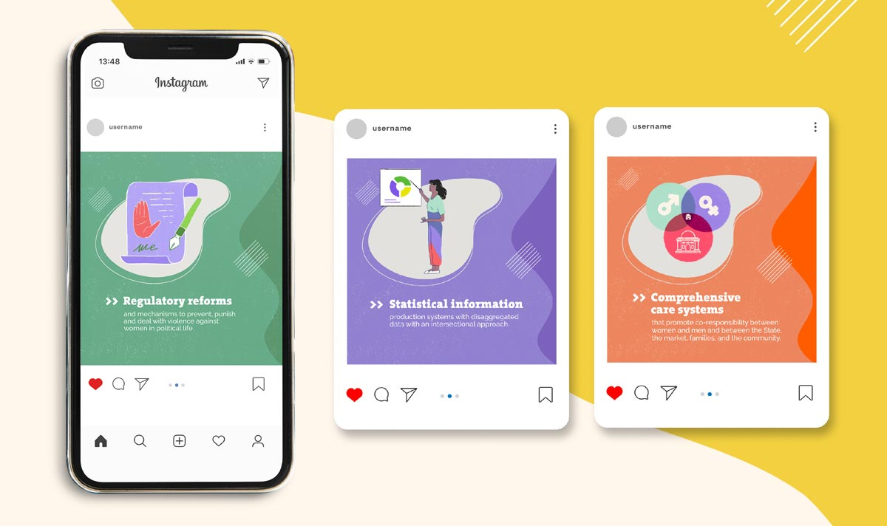
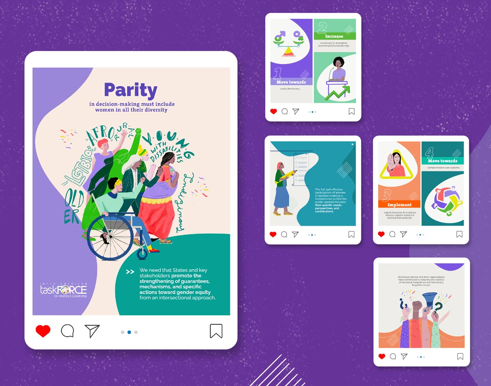

Cumbre de las Américas
> Sistema de comunicación
Sin paridad no hay democracia.
    





Sobre el proyecto
Con motivo de la IX cumbre de las Américas, llevada a cabo a mediados del 2022, el Taskforce Interamericano sobre el liderazgo de las mujeres nos contactó para diseñar e ilustrar el informe que habían realizado sobre el estado de la paridad en la región.
Partimos de los lineamientos visuales propios del TaskForce y los expandimos para darle al informe una identidad derivada y a la vez, única y llamativa.
Jugamos un poco con la diagramación para darle dinamismo a la información, sin salirnos del tono propio de la organización.
Las ilustraciones para este proyecto buscaban representar la diversidad de las mujeres en la región, sus cuerpos y actividades a través invitaban al empoderamiento, la asociatividad y la determinación sin olvidar los obstáculos y dificultades aún latentes.
Además de la presentación del informe ante la cumbre, mucha de la información que se encontraba en este debía estar disponible para la discusión pública, por lo que desarrolló un sistema de comunicación visual, compuesto por una serie de publicaciones para redes sociales y un micrositio.
Por la naturaleza de la organización y el despliegue de la información, este proyecto se desarrolló en español e inglés.
Acerca del proyecto
Cliente: Task Force Interamericano sobre el liderazgo de las mujeres
Año: 2022
Productos entregados: 1 informe, 1 resumen ejecutivo, 1 micrositio bilingüe, 1 parrilla de contenidos para redes sociales.
Enlaces: